You can skip climb for hookshottable ladders can be skipped by hookshotting the top of the ladder from the correct distance and angle and holding forward to ledge grab.
This is more difficult for some ladders than others due to the quirks of geometory and Link's ledge grab.
Hookshotting climbable walls in the same way is not a trick, as it is trivial to get an angle that correctly ledge grabs.
Unless specified otherwise an easy way to get a good angle is to drop off the ladder, backflip, then sidehop and from there aim for the top of the ladder.
Hyrule Field, entering and leaving via the south path.
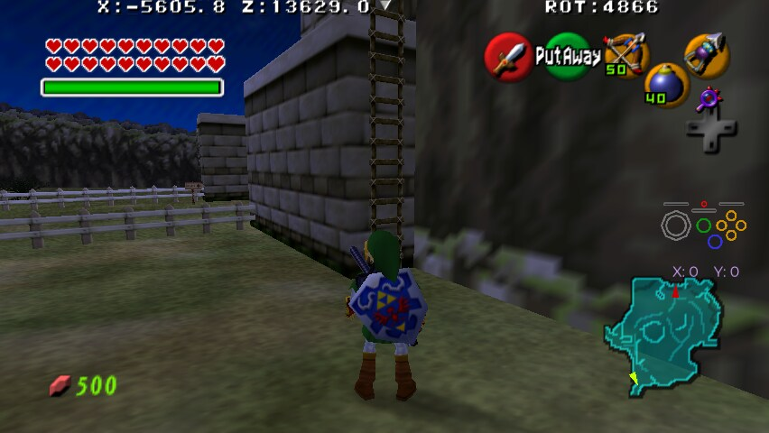
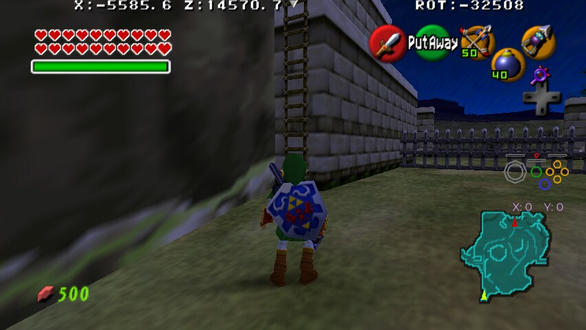
Kokiri Forest, ladder to Link's Porch
This ladder is very precise so the setup, and thus killing the Deku Baba if Forest Temple is not cleared, is logically required. Stunning it does not last long enough to perform the trick.
Lost Woods, from the bridge to the Main area
Note that this is only for climbing the ladder, Hookshotting it, dropping down and getting checks from the Gossip Stone is not a trick.
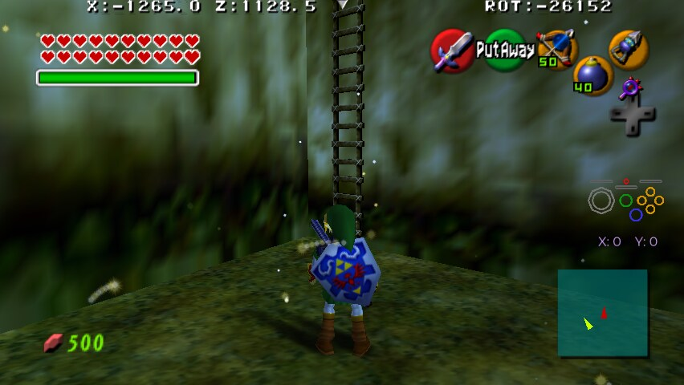
Sacred Forest Meadow Ladders to the upper level.
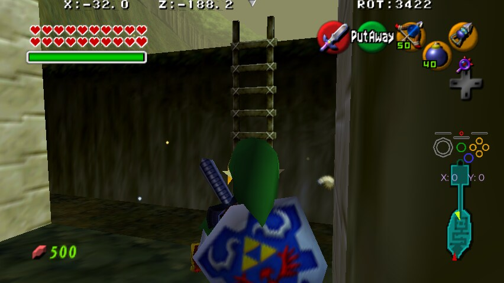
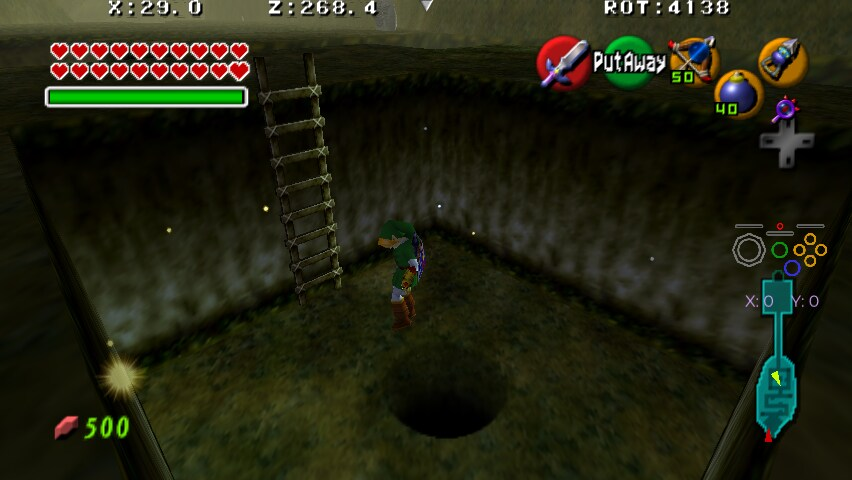
Zora's River ladder to the Grottos.
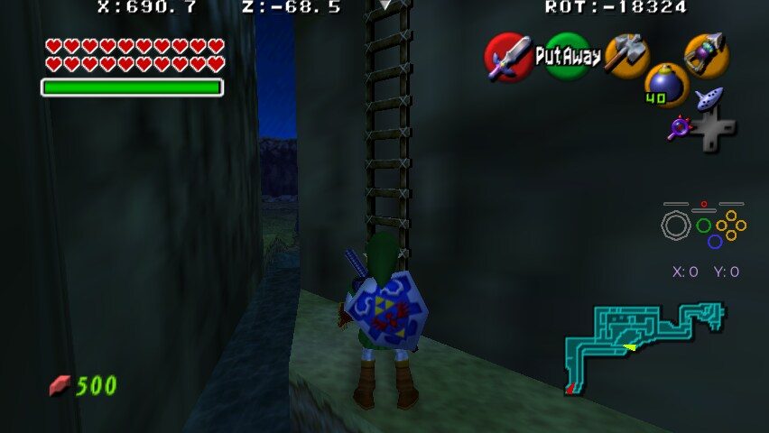
Death Mountain Crater From the Scrub Region to the Upper Region.
Note that if "Crater's Bean PoH with Hover Boots" is on, you may be asked to Longshot from that Heart Piece to the big climbing wall even without this trick.
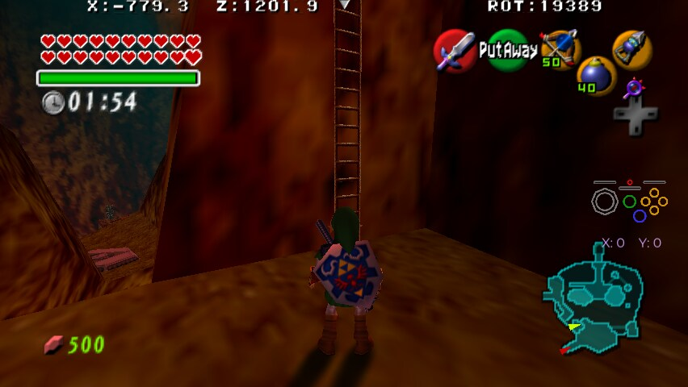
Gerudo Fortress ladder onto the tower.
One of the most awkward ladders, using the setup is recommended.
Dodongo's Cavern Spike Room, ladder leading to the bridge.
The setup is blocked by the environment, but the gap between the pillars is perfectly spaced for an easy hook.
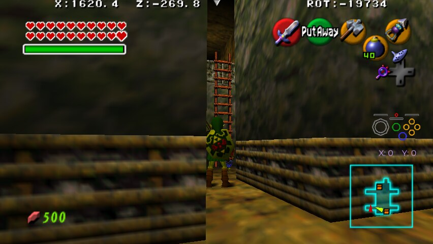
Shadow Temple Dock.
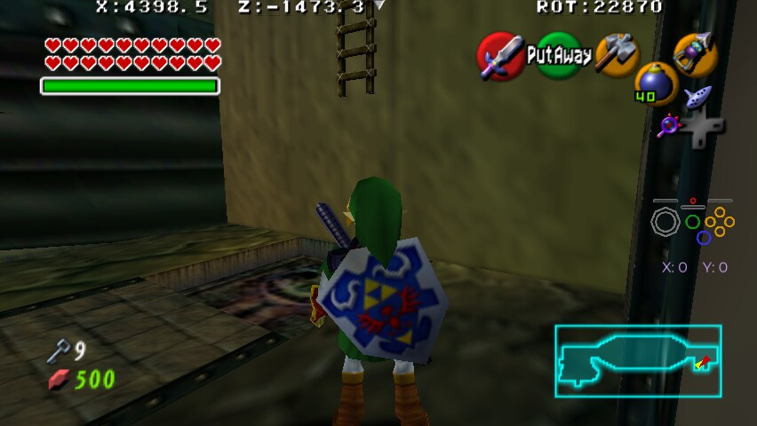
Zora's Domain, escaping the grotto Island as Child without swimming.
Adult can simply walk over the ice, and with Longshot you can hook one of the chest torches which is not a trick.
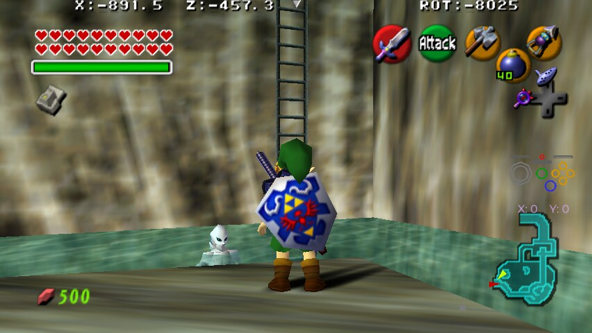
Dodongo's Cavern, climbing to the Switch Platform.
Adult gets there with just a ledge climb, skipping the ladder entirely.
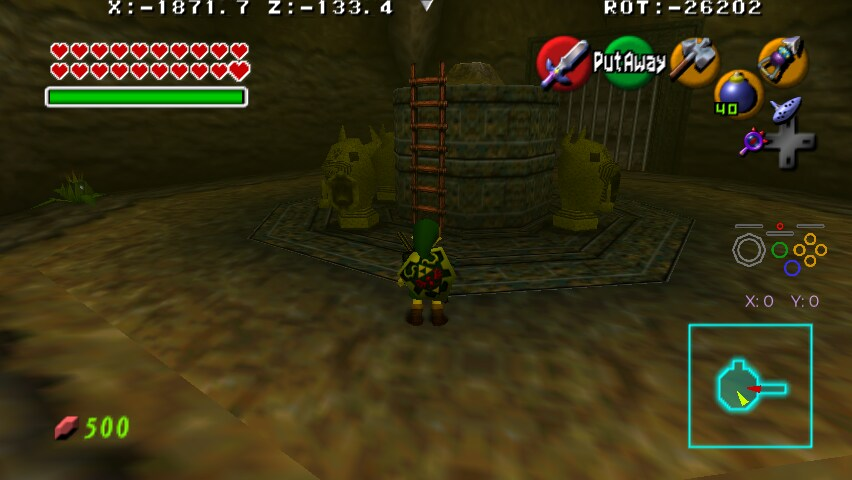
Dodongo's Cavern, ladder towards Upper Lizalfos Loop.
This ladder can be skipped using blocks to platform to the ledge instead.
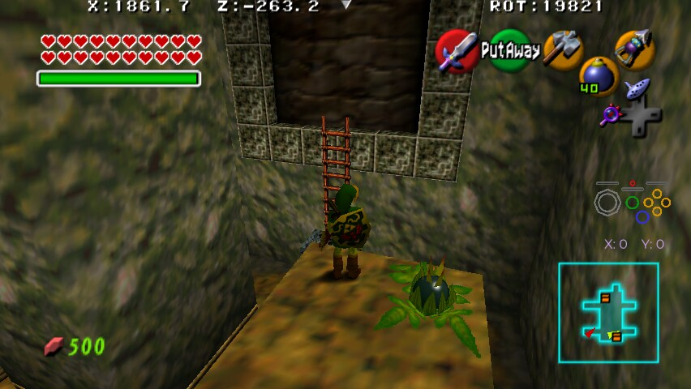
Bottom of the Well, Entrance Ladder
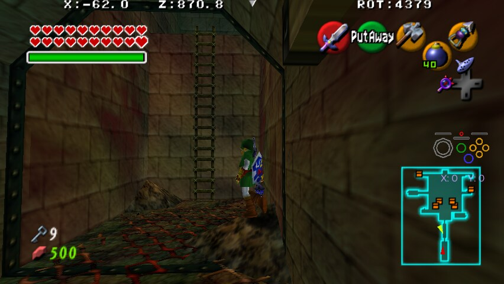
Bottom of the Well, Leaving B3
The slime messes with the setup, but standing on the edge of the wood works fine.
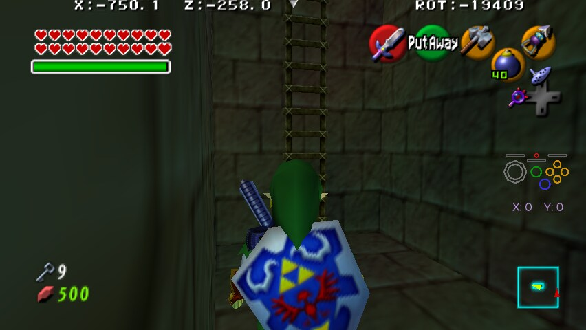
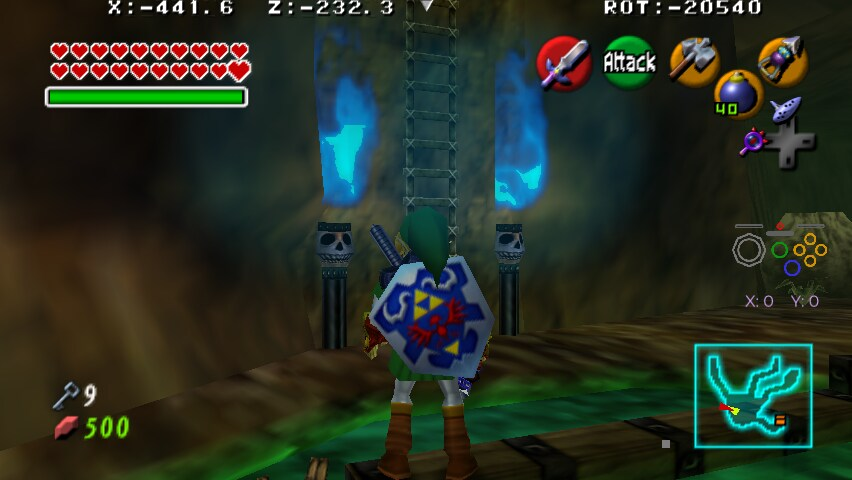